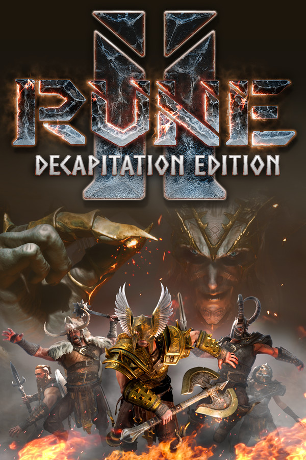

Rune II: Decapitation Edition
Rune II: Decapitation Edition
Details
|  | |
| Playtime | Not Played |
| Last Activity | Never |
| Added | 4/16/2022 10:07:50 |
| Modified | 4/19/2022 18:52:19 |
| Completion Status | $Check Out |
| Library | Playnite |
| Source | Wanderer |
| Platform | PC (Windows) |
| Release Date | 11/13/2020 |
| Community Score | 54 |
| Critic Score | 76 |
| User Score | |
| Genre | Action RPG |
| Developer | Studio 369 |
| Publisher | Ragnarok Game, LLC |
| Feature | Co-Op Multiplayer Online Co-Op Online Pvp Partial Controller Support Pvp Single Player |
| Links | Community Hub Discussions Guides News Store Page PCGamingWiki |
| Tag | [EMT] Logo Missing |
Description
RUNE II: Decapitation Edition is THE viking adventure where friends travel around Midgard, destroying foes, crushing enemies, and dismembering the trickster-God Loki. RUNE II: Decapitation Edition is not made for everyone. Here's what you can expect from RUNE II...
If your time with RUNE II lasts longer than 4 hours, do not consult a doctor, just keep playing! RUNE II is made with passion, aimed at providing a ridiculous fun experience. We encourage those interested in RUNE II to join us on this journey. We are listening to your feedback and are excited to improve RUNE II together.

THAT WHICH DOES NOT KILL ME….SHOULD RUN!
Abandoned and sabotaged by the original developers, RUNE II was left in a state of disarray. Raised from the ashes by Studio 369, the game has now emerged for a Steam launch as a re-envisioned story of betrayal, rebirth and revenge. Severing that old human head has freed RUNE II and it is now a glorious Viking adventure.
In this journey to open the ultimate can of whoopass on Loki and save Midgard, you’ll need heavy weapons, raucous friends, and lots and lots of mead. Call upon the power of the Viking deities Odin, Hel, or Thor to bless your quest to take down a God. Explore an expanded Midgard world with buildable villages and loot-filled dungeons. Battle savage hordes of enemies from Norse legends alone or online with friends. Experience brand new gameplay features including a skill tree system, improved combat mechanics, and a revamped quest system.

RUNE II Retold
As the chosen warrior who will save all of Midgard, you must battle against legendary creatures, giants, feral beasts, living warriors, and the dishonored dead alike. Seek the weapons and knowledge needed to confront Loki and stop his scheme of an unending cycle of Ragnarok. Experience a NEW RUNE II main narrative that introduces new characters, numerous quests and an ending sequence fitting for a legendary Viking saga.

The Vast and Dangerous Lands of Midgard
Explore the once-beautiful realm of Midgard, now a ravaged battlefield fought between men, beasts, and gods. The quest to kill Loki will have you tested through the Ages of Ragnarok: journey through mountainous terrain, charge through blood-soaked fields, sulk through dangerous dungeons, and defend village settlements against violent hordes.

Fast and Brutal Combat Redefined
The combat system for RUNE II has been vastly improved, intensifying the level of strategy and savagery in battles. Master new parrying techniques, stagger enemies with new combo attacks, and execute finishing moves to dismember, decapitate, or simply destroy foes into gibby pieces… take their mutilated limbs as trophies or even use them as weapons!

Build Your Viking Tribe and Fight for Glory
Slaying a god is always better with friends! Invite fellow fighters to band together and trek across the realm online. Repair and build village forts, battle side by side against gargantuan mythical creatures, and stand as one to face the prankster god Loki. Add to the madness of Ragnarok with brutal PvP battles to see who is the most fearsome Viking in all of Midgard.

God-Given Abilities
Align with a Norse god to receive unique abilities and skills to aid your quest in defeating Loki. Choose from Thor, who imbues you with strength; Hel, who gives you power over the dead; Odin, who will grant you additional protection in battle; or reject the power of the gods and forge your own path as a Heathen warrior. Gain experience in the new skill tree system and unlock over 20 new abilities centered around your chosen deity that include unleashing berserker rage fury, casting lightning bolts, and summoning pet allies to aid you in battle.

RUNE II Dungeons
Deep below Midgard, mazes of subterranean levels hide treasures and artifacts of power... as well as an ancient evil. Requested by the community and inspired by classic RUNE levels, the dungeons will challenge the most hardened Viking warriors as they encounter a gauntlet of enemies, challenging platform sequences, and vile monster bosses. Beware what lies below!

Viking Village Life
Rebuild the land of Midgard by gathering resources to repair villages. Create longhouses, forges, and other buildings to restore the community as villagers return to rally behind your cause. Loki’s thrall army will attack during Horde Events, so take up arms with villagers to defend to the last man, woman, and child. For Valhalla!

- BUY this game if you don’t take yourself too seriously or like video games that are self aware.
- BUY this game if you are looking for a fun game to play alone or with friends.
- BUY this game if you enjoy mead and are looking for a fun drinking game.
- BUY this game if you are into ARPGs focused on hacking, slashing, and slaughtering your enemies.
- BUY this game if you like dismembering your foes and beating them with their own limbs.
- BUY this game if you like passionate teams behind your games who update and improve the game based on community feedback often, set on creating the funnest game possible.
- PASS if you want branching storylines that ultimately rarely matter.
- PASS if you are expecting extravagant base building.
- PASS if you want an exact replica of the first RUNE game.
- PASS if you want to spend hours in character upgrade menus.
- PASS if you expect a hardcore survival title.
- PASS if you are afraid of trees.
If your time with RUNE II lasts longer than 4 hours, do not consult a doctor, just keep playing! RUNE II is made with passion, aimed at providing a ridiculous fun experience. We encourage those interested in RUNE II to join us on this journey. We are listening to your feedback and are excited to improve RUNE II together.
THAT WHICH DOES NOT KILL ME….SHOULD RUN!
Abandoned and sabotaged by the original developers, RUNE II was left in a state of disarray. Raised from the ashes by Studio 369, the game has now emerged for a Steam launch as a re-envisioned story of betrayal, rebirth and revenge. Severing that old human head has freed RUNE II and it is now a glorious Viking adventure.
In this journey to open the ultimate can of whoopass on Loki and save Midgard, you’ll need heavy weapons, raucous friends, and lots and lots of mead. Call upon the power of the Viking deities Odin, Hel, or Thor to bless your quest to take down a God. Explore an expanded Midgard world with buildable villages and loot-filled dungeons. Battle savage hordes of enemies from Norse legends alone or online with friends. Experience brand new gameplay features including a skill tree system, improved combat mechanics, and a revamped quest system.
RUNE II Retold
As the chosen warrior who will save all of Midgard, you must battle against legendary creatures, giants, feral beasts, living warriors, and the dishonored dead alike. Seek the weapons and knowledge needed to confront Loki and stop his scheme of an unending cycle of Ragnarok. Experience a NEW RUNE II main narrative that introduces new characters, numerous quests and an ending sequence fitting for a legendary Viking saga.
The Vast and Dangerous Lands of Midgard
Explore the once-beautiful realm of Midgard, now a ravaged battlefield fought between men, beasts, and gods. The quest to kill Loki will have you tested through the Ages of Ragnarok: journey through mountainous terrain, charge through blood-soaked fields, sulk through dangerous dungeons, and defend village settlements against violent hordes.
Fast and Brutal Combat Redefined
The combat system for RUNE II has been vastly improved, intensifying the level of strategy and savagery in battles. Master new parrying techniques, stagger enemies with new combo attacks, and execute finishing moves to dismember, decapitate, or simply destroy foes into gibby pieces… take their mutilated limbs as trophies or even use them as weapons!
Build Your Viking Tribe and Fight for Glory
Slaying a god is always better with friends! Invite fellow fighters to band together and trek across the realm online. Repair and build village forts, battle side by side against gargantuan mythical creatures, and stand as one to face the prankster god Loki. Add to the madness of Ragnarok with brutal PvP battles to see who is the most fearsome Viking in all of Midgard.
God-Given Abilities
Align with a Norse god to receive unique abilities and skills to aid your quest in defeating Loki. Choose from Thor, who imbues you with strength; Hel, who gives you power over the dead; Odin, who will grant you additional protection in battle; or reject the power of the gods and forge your own path as a Heathen warrior. Gain experience in the new skill tree system and unlock over 20 new abilities centered around your chosen deity that include unleashing berserker rage fury, casting lightning bolts, and summoning pet allies to aid you in battle.
RUNE II Dungeons
Deep below Midgard, mazes of subterranean levels hide treasures and artifacts of power... as well as an ancient evil. Requested by the community and inspired by classic RUNE levels, the dungeons will challenge the most hardened Viking warriors as they encounter a gauntlet of enemies, challenging platform sequences, and vile monster bosses. Beware what lies below!
Viking Village Life
Rebuild the land of Midgard by gathering resources to repair villages. Create longhouses, forges, and other buildings to restore the community as villagers return to rally behind your cause. Loki’s thrall army will attack during Horde Events, so take up arms with villagers to defend to the last man, woman, and child. For Valhalla!